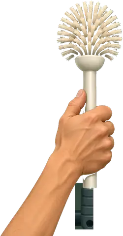

Un fil entre les barreaux


Prends le temps de regarder autour de toi.
Le yo-yo : un fil entre les cellules
En prison, le « yo-yo » est un moyen de communication et de livraison entre cellules. Des bandes de drap nouées forment une corde. Le drap est enroulé autour de la grande barre d’un cintre retourné ; le crochet du cintre soutient la poignée du sac. On descend le sac puis on le fait osciller devant une autre fenêtre. Café, tabac, nourriture ou messages passent ainsi d’une personne à l’autre.
Ton bras ne suffit pas : la brosse à toilette te permettra d’attraper la corde à travers les barreaux.
- Trouve la brosse dans la cellule : déplace la main vers le manche. Quand le cercle devient vert, appuie sur le bouton rouge. +10 points.
- Attrape le tabac : déplace la tête de la brosse sous la corde. Le cercle devient vert lorsque la corde passe dans un espace entre deux barreaux et que la brosse est alignée : appuie sur le rouge pour l’accrocher. Puis déplace doucement la manette pour faire passer le sac et ton bras par ce même espace. Ce n’est que dans une ouverture que tu pourras tirer. Si tu relâches, le sac s’arrête ; appuie à nouveau pour continuer. Il reste bloqué s’il touche un barreau. Après le premier sac, le bâtiment gris commence à prendre des couleurs. +10 points.
- Attrape le café de la même façon, en faisant passer le deuxième sac dans un intervalle. Le bâtiment déjà légèrement coloré devient entièrement éclatant. +10 points.
Des pas et des clés ? Joystick vers le bas pour te cacher. Reste à l’abri jusqu’à ce que le surveillant s’éloigne. Un mouvement à gauche ou à droite te fait ressortir. S’il te surprend, tu recommences les trois épreuves.
Dans le passage du livre, tout arrive dans un seul sac. Le jeu sépare les deux livraisons.
Le geste, en trois temps
- Place la brosse sous la corde avec la manette. La tête de la brosse doit croiser la corde.
- Attends le cercle vert, puis appuie sur le bouton rouge.
- Déplace doucement la manette pour faire passer le sac et le bras entre deux barreaux. Quand l’espace est libre, maintiens le rouge pour ramener le sac. Un barreau bloque réellement le mouvement.
Relâcher arrête le sac, sans perdre ta prise. Au bruit des clés, manette vers le bas ; tu pourras reprendre après le passage du surveillant.
ENTRE
LES BARREAUX
━━━━━━
← → viser · ↓ se cacher · Espace : attraper / maintenir pour tirer · P : pause
Sur téléphone : manette à gauche, bouton rouge à droite.